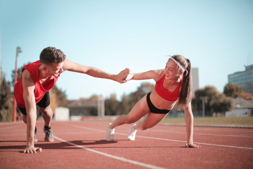

lekka atletyka
- Zajęcia są bardzo zróżnicowane, każdy zawodnik/uczeń będzie mógł spróbować swoich sił w różnych konkurencjach lekkoatletycznych: biegowych, skocznościowych oraz rzutowych.
- Treningi dostosowane są do poziomu zaawansowania uczestników i są znakomitą okazją by pod okiem fachowców, w przyjemnej atmosferze poprawić swoją sprawność fizyczną.
- Młodzi sportowcy będą mogli sprawdzić swoje umiejętności w zawodach sportowych.
- Zajęcia z lekkiej atletyki są również bardzo dobrym przygotowaniem motorycznym do gier zespołowych.
- Klub UKS Wilga posiada licencję PZLA oraz zrzeszony jest w Małopolskim Związku Lekkiej Atletyki.
- Osoba prowadząca: Trener PZLA mgr Barbara Siemieńska
- Składka członkowska dla sekcji Lekkiej atletyki: 40zł/miesiąc
- ZAPISY I KONTAKT - tylko i wyłącznie pisząc na adres mailowy: lekkoatletyka@ukswilga.pl
terminy zajęć:
- Klasy 1 - poniedziałki godz. 14.55
- Klasy 2 i 3 - poniedziałki godz. 14.05
- Klasy 4 - 8 - wtorki godz. 14.55
